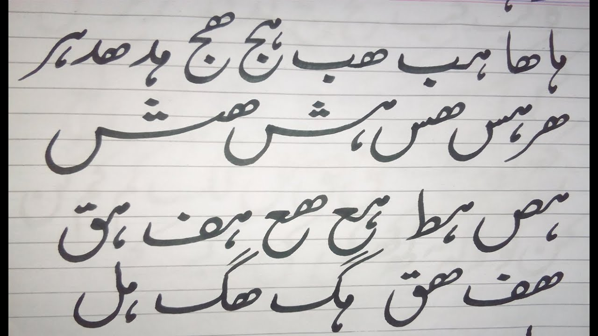
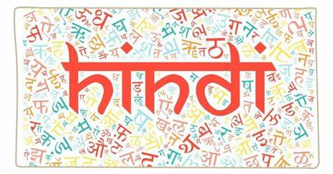

Languages Spoken in Andhra Pradesh
Andhra Pradesh is a state of diverse languages, with Telugu being the official and most widely spoken language. The state is also home to various dialects and languages that reflect its cultural richness.
Telugu:
The official language of Andhra Pradesh, Telugu, is one of the oldest Dravidian languages. It is known for its classical literature, poetry, and rich cultural heritage.

Urdu:
Urdu, spoken by a significant minority in Andhra Pradesh, especially in areas with historical Muslim influence, is known for its poetic expression and cultural significance.
